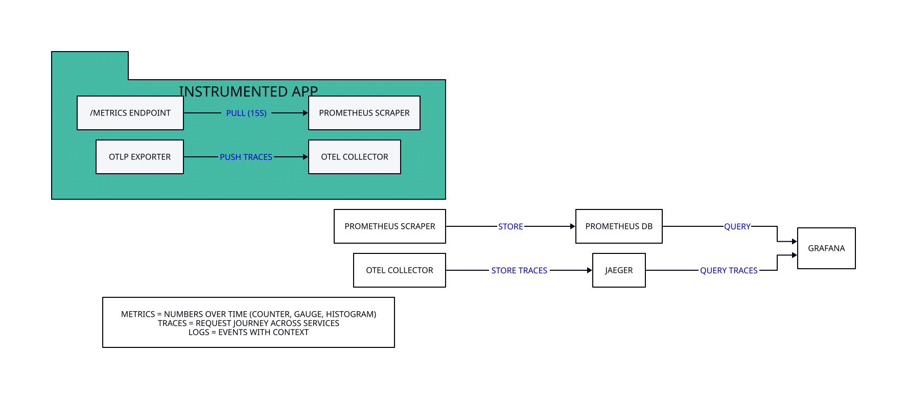

Prometheus و Grafana

در عمل زمانی که یک برنامه وارد محیط Production میشود موفقیت آن هم به درستی کد و هم به پایداری، کارایی و قابلیت Observability آن بستگی دارد. یکی از استانداردهای شناختهشده برای مانیتورینگ در اکوسیستم cloud-native استفاده از Prometheus برای جمعآوری Metrics و Grafana برای مصورسازی آنهاست.
در هستهی Prometheus دادهها به صورت time series ذخیره میشوند. هر time series شامل متریک، Labels (جفتهای کلید-مقدار) و Timestamp است.
9.2.1 انواع Metrics
Prometheus در ابتدا توسط SoundCloud توسعه یافت تا نیازهای مانیتورینگ یک پلتفرم موسیقی با میلیونها کاربر را برآورده کند.
قبل از Prometheus، تیم SoundCloud از ابزارهای مانیتورینگ مبتنی بر push مانند Graphite و StatsD استفاده میکرد که در مقیاس بزرگ با مشکلاتی مواجه بودند: سرورهای مانیتورینگ بار زیادی تحمل میکردند، پیکربندی هر سرویس برای ارسال متریکها پیچیده بود، و شناسایی سرویسهای جدید بهصورت خودکار انجام نمیشد.
مدل pull-based آن به این معناست که سرور Prometheus بهصورت دورهای متریکها را از سرویسها جمعآوری میکند، نه اینکه سرویسها متریکها را push کنند.
این رویکرد مزایای کلیدی دارد: سرویسها نیازی به دانستن آدرس سرور مانیتورینگ ندارند، service discovery بهصورت خودکار انجام میشود، و سلامت سرویس با یک scrape ساده قابل بررسی است.
اگر سرور Prometheus بتواند متریکهای یک سرویس را scrape کند، یعنی سرویس سالم است — این یک built-in health check است که بدون پیکربندی اضافی کار میکند.
امروز Prometheus استاندارد واقعی مانیتورینگ در دنیای Cloud Native و عضو اصلی CNCF است. تقریباً هر پروژه Cloud Native از Kubernetes تا Istio متریکهای Prometheus را بهطور پیشفرض ارائه میدهند.
اکوسیستم ابزارهای اطراف آن — شامل Alertmanager برای هشداردهی، Thanos برای مقیاسپذیری بلندمدت، و Grafana برای تجسم — آن را به کاملترین راهکار مانیتورینگ تبدیل کرده است.
CloudNativeCon 2016 ، ۲۰۱۶
Prometheus چهار نوع متریک اصلی دارد. انتخاب نوع مناسب برای هر سناریو، تفاوت بین داشبورد مفید و دادههای بیفایده را رقم میزند. در ادامه هر نوع را با تصویر، مثال عملیاتی و کد Go بررسی میکنیم.
Counter
flowchart TB
title(["Counter — فقط افزایش مییابد (Monotonically Increasing)"])
subgraph GRAPH["نمودار Counter (t1→t4)"]
direction TB
T1["t1: 0"]
T2["t2: ~500"]
T3["t3: restart → reset to 0"]
T4["t4: 1000"]
T1 --> T2 --> T3 --> T4
end
subgraph INFO["api.RequestsTotal"]
direction TB
WHAT[چه چیزهایی شمارش شود؟• تعداد درخواستهای HTTP• تعداد خطاهای دیتابیس• تعداد...]
PROMQL[PromQLrate(http_requests_total[5m])نرخ درخواست در هر ثانیهنکته: هرگز Counter...]
end
RULE([قانون طلایی: Counter فقط با rate() یا increase() معنا دارد — مقدار مطلق آن...])
title ~~~ GRAPH
GRAPH ~~~ INFO
INFO ~~~ RULE
classDef titleBox fill:#f8fafc,stroke:#475569,stroke-width:1px,color:#1f2937,font-weight:bold;
classDef okBox fill:#ecfdf5,stroke:#10b981,stroke-width:1.5px,color:#1f2937;
classDef errBox fill:#fef2f2,stroke:#ef4444,stroke-width:1.5px,color:#1f2937;
classDef neutralBox fill:#f8fafc,stroke:#475569,stroke-width:1px,color:#1f2937;
classDef noteBox fill:#fffbeb,stroke:#f59e0b,stroke-width:1px,color:#1f2937,font-style:italic;
class title titleBox;
class T1,T2,T4 okBox;
class T3 errBox;
class WHAT,PROMQL neutralBox;
class RULE okBox;
Counter سادهترین و پرکاربردترین نوع متریک است. مقدار آن از صفر شروع شده و فقط افزایش مییابد — هرگز کاهش نمییابد. وقتی برنامه ریاستارت شود، Counter به صفر برمیگردد و Prometheus بهطور خودکار این ریستارت را تشخیص داده و rate() را درست محاسبه میکند.
به همین دلیل هیچگاه نباید Counter را مستقیم روی داشبورد رسم کنید — فقط نرخ تغییر آن (rate) معنادار است.
سناریوهای عملیاتی Counter:
- شمارش درخواستها: هر درخواست HTTP یک واحد به
http_requests_totalاضافه میشود. با rate() نرخ درخواست در ثانیه بهدست میآید. - شمارش خطاها: هر خطای 500 یک واحد به
http_errors_totalاضافه میشود. نسبتrate(errors)/rate(total)نرخ خطا را نشان میدهد. - بایتهای ارسالی: هر پاسخ HTTP حجم بایت خود را به
response_bytes_totalاضافه میکند. rate() پهنای باند مصرفی را نشان میدهد. - تعداد پرداختها: در یک سیستم مالی، هر تراکنش موفق یک واحد اضافه میشود. increase()[24h] تعداد تراکنشهای روزانه را نشان میدهد.
// Counter: شمارش درخواستهای HTTP به تفکیک متد و مسیر و وضعیت
var httpRequestsTotal = prometheus.NewCounterVec(
prometheus.CounterOpts{
Name: "http_requests_total",
Help: "Total number of HTTP requests",
},
[]string{"method", "path", "status"},
)
// استفاده در middleware
func metricsMiddleware(next http.Handler) http.Handler {
return http.HandlerFunc(func(w http.ResponseWriter, r *http.Request) {
start := time.Now()
wrapped := &responseWriter{ResponseWriter: w, statusCode: 200}
next.ServeHTTP(wrapped, r)
// هر درخواست: یک واحد اضافه شود
httpRequestsTotal.WithLabelValues(
r.Method,
r.URL.Path,
strconv.Itoa(wrapped.statusCode),
).Inc()
slog.Info("request", "duration", time.Since(start))
})
}NewCounterVec). مثلاً بهجای یک Counter کلی، از Labels مثل method و status استفاده کنید تا بتوانید نرخ خطا را به تفکیک endpoint تحلیل کنید. بدون Labels، فقط یک عدد کلی دارید که برای عیبیابی بیفایده است.Gauge
flowchart TB
title(["Gauge — افزایش و کاهش (Current State)"])
subgraph GRAPH["نمودار Gauge (fluctuating)"]
direction LR
T1["Inc() +50"]
T2["Dec() -35"]
T3["Set(140)"]
T1 --> T2 --> T3
end
subgraph INFO["app.ActiveConnections"]
direction TB
WHAT[چه چیزهایی اندازهگیری شود؟• اتصالهای فعال دیتابیس• تعداد goroutineها•...]
PROMQL["PromQLgo_goroutinesavg_over_time(temp[1h])مقدار Gauge مستقیم معنادار است"]
end
RULE([قانون طلایی: Gauge وضعیت فعلی را نشان میدهد — برعکس Counter، مقدار مطلق آن...])
title ~~~ GRAPH
GRAPH ~~~ INFO
INFO ~~~ RULE
classDef titleBox fill:#f8fafc,stroke:#475569,stroke-width:1px,color:#1f2937,font-weight:bold;
classDef warnBox fill:#fffbeb,stroke:#f59e0b,stroke-width:1.5px,color:#1f2937;
classDef neutralBox fill:#f8fafc,stroke:#475569,stroke-width:1px,color:#1f2937;
class title titleBox;
class T1,T2,T3 warnBox;
class WHAT,PROMQL neutralBox;
class RULE warnBox;
Gauge متریک وضعیت لحظهای است. برعکس Counter، مقدار Gauge میتواند افزایش یا کاهش یابد و مقدار مطلق آن مهم است — نیازی به rate() ندارد. Gauge نشاندهندهی «وضعیت الان» است: چند اتصال فعال داریم؟ چقدر حافظه مصرف شده؟ چند goroutine در حال اجراست؟
سناریوهای عملیاتی Gauge:
- اتصالهای فعال: هر اتصال ورودی
Inc()و هر قطع اتصالDec()فراخوانی میشود. این عدد نشان میدهد سرور چقدر تحت بار است. - مصرف حافظه: هر ۱۰ ثانیه
Set(runtime.MemStats.Alloc)فراخوانی میشود. اگر حافظه مدام بالا برود و پایین نیاید، نشانهی memory leak است. - تعداد goroutine:
go_goroutinesبهطور خودکار توسط کتابخانه Prometheus گزارش میشود. افزایش مداوم نشانهی goroutine leak است. - دمای CPU / فضای دیسک: منابع سیستمی که مقدارشان بالا و پایین میرود. برای این موارد Gauge مناسب است چون مقدار مطلق مهم است.
// Gauge: اندازهگیری وضعیت لحظهای
var (
activeConnections = prometheus.NewGauge(prometheus.GaugeOpts{
Name: "http_active_connections",
Help: "Current number of active connections",
})
dbConnections = prometheus.NewGaugeVec(prometheus.GaugeOpts{
Name: "db_connections_active",
Help: "Active database connections by pool",
}, []string{"pool"})
memoryUsage = prometheus.NewGaugeFunc(prometheus.GaugeOpts{
Name: "app_memory_bytes",
Help: "Current memory allocation in bytes",
}, func() float64 {
var m runtime.MemStats
runtime.ReadMemStats(&m)
return float64(m.Alloc)
})
)
// استفاده: اتصال ورودی
activeConnections.Inc()
defer activeConnections.Dec()
// تنظیم مستقیم مقدار
dbConnections.WithLabelValues("primary").Set(float64(dbPool.Stats().OpenConnections))Histogram
flowchart TB
title(["Histogram — توزیع مقادیر در Bucketها + محاسبه Percentile"])
subgraph BUCKETS["Bucket Distribution (Cumulative Buckets)"]
direction LR
B1["le=0.005 → 10"]
B2["le=0.01 → 25"]
B3["le=0.025 → 50"]
B4["le=0.05 → 80"]
B5["le=0.1 → 92"]
B6["le=0.25 → 98"]
B7["le=+Inf → 100"]
B1 --> B2 --> B3 --> B4 --> B5 --> B6 --> B7
end
subgraph PERCENTILES["Percentile lines"]
direction TB
P50["p50 ~ 50ms"]
P95["p95 ~ 100ms"]
P99["p99 ~ 250ms"]
end
subgraph SERIES["Histogram = 3 Time Series"]
direction TB
S1["_bucket{le="0.05"} 80تعداد نمونههای ≤ 50ms"]
S2["_sum 4.52مجموع تمام مقادیر"]
S3["_count 100تعداد کل نمونهها"]
end
PROMQL(["PromQL: histogram_quantile(0.95, rate(http_duration_bucket[5m]))"])
RULE([قانون طلایی: Histogram را وقتی استفاده کنید که نیاز به percentile دارید و...])
title ~~~ BUCKETS
BUCKETS ~~~ PERCENTILES
PERCENTILES ~~~ SERIES
SERIES ~~~ PROMQL
PROMQL ~~~ RULE
classDef titleBox fill:#f8fafc,stroke:#475569,stroke-width:1px,color:#1f2937,font-weight:bold;
classDef traceBox fill:#f5f0fb,stroke:#9C27B0,stroke-width:1.5px,color:#1f2937;
classDef errBox fill:#fef2f2,stroke:#ef4444,stroke-width:1px,color:#1f2937;
classDef warnBox fill:#fffbeb,stroke:#f59e0b,stroke-width:1px,color:#1f2937;
classDef noteBox fill:#fffbeb,stroke:#f59e0b,stroke-width:1px,color:#1f2937,font-style:italic;
class title titleBox;
class B1,B2,B3,B4,B5,B6,B7 traceBox;
class P50 traceBox;
class P95 warnBox;
class P99 errBox;
class S1,S2,S3 traceBox;
class PROMQL warnBox;
class RULE noteBox;
Histogram سه سری زمانی تولید میکند: _bucket (توزیع تجمعی)، _sum (مجموع مقادیر) و _count (تعداد نمونهها). مزیت اصلی Histogram این است که percentile ها سمت سرور (Prometheus) محاسبه میشوند — یعنی میتوانید دادههای چند instance را تجمیع کرده و p95 کلی سیستم را بهدست آورید. این ویژگی در محیطهای میکروسرویسی حیاتی است.
سناریوهای عملیاتی Histogram:
- زمان پاسخ HTTP: هر درخواست زمان
Observe(duration)فراخوانی میشود. p95 و p99 latency از مهمترین متریکهای هر API هستند. - حجم پاسخ:
Observe(float64(len(responseBody)))— توزیع حجم پاسخها کمک میکند بفهمید آیا برخی endpointها پاسخهای غیرعادی بزرگ برمیگردانند. - مدت کوئری دیتابیس:
Observe(queryDuration.Seconds())— شناسایی کوئریهای کند با بررسی p99 به تفکیک نام کوئری.
// Histogram: اندازهگیری توزیع زمان پاسخ
var httpDuration = prometheus.NewHistogramVec(
prometheus.HistogramOpts{
Name: "http_request_duration_seconds",
Help: "HTTP request duration distribution",
Buckets: []float64{0.005, 0.01, 0.025, 0.05, 0.1, 0.25, 0.5, 1.0, 2.5, 5.0},
// 5ms 10ms 25ms 50ms 100ms 250ms 500ms 1s 2.5s 5s
},
[]string{"method", "path"},
)
// استفاده در middleware
func durationMiddleware(next http.Handler) http.Handler {
return http.HandlerFunc(func(w http.ResponseWriter, r *http.Request) {
start := time.Now()
next.ServeHTTP(w, r)
duration := time.Since(start).Seconds()
// هر درخواست: مدت زمان آن ثبت شود
httpDuration.WithLabelValues(r.Method, r.URL.Path).Observe(duration)
})
}
// نکته مهم: Bucketها را بر اساس SLA خود انتخاب کنید
// اگر SLA شما "p99 < 500ms" است، حتماً 0.5 در Buckets باشدDefBuckets) شامل بازههای {0.005, 0.01, 0.025, 0.05, 0.1, 0.25, 0.5, 1, 2.5, 5, 10} ثانیه است. این بازهها برای اکثر APIها مناسب هستند، اما اگر SLA شما متفاوت است باید Bucket سفارشی تعریف کنید. مثلاً اگر SLA شما «p99 زیر 100ms» است، باید بازههای ریزتری مثل {0.01, 0.025, 0.05, 0.075, 0.1, 0.15, 0.25} داشته باشید تا دقت محاسبه percentile بالا باشد. Bucketها قابل تغییر پس از تعریف نیستند — فقط با ریاستارت و از دست رفتن دادههای قبلی قابل تغییر هستند.Summary
flowchart TB
title(["Summary — Percentile سمت کلاینت (بدون قابلیت تجمیع)"])
APP["Go App (Client)"]
OBS["Observe(value)ذخیره در حافظه محلیمحاسبه percentile در سمت کلاینت"]
SERIES["_seconds{quantile="0.5"}_seconds{quantile="0.9"}_seconds{quantile="0.99"}_seconds_sum / _seconds_count"]
PROM["Prometheus"]
APP --> OBS --> SERIES --> PROM
WARN([مشکل: نمیتوانید از چند نمونه تجمیع کنید!p95 نمونه A = 100ms + p95 نمونه B =...])
subgraph CMP["Summary vs Histogram"]
direction LR
H["Histogram: قابل تجمیع ✓"]
S["Summary: غیرقابل تجمیع ✗"]
end
RULE([قانون طلایی: فقط وقتی از Summary استفاده کنید که یک نمونه دارید و تجمیع لازم...])
title ~~~ APP
PROM ~~~ WARN
WARN ~~~ CMP
CMP ~~~ RULE
classDef titleBox fill:#f8fafc,stroke:#475569,stroke-width:1px,color:#1f2937,font-weight:bold;
classDef errBox fill:#fef2f2,stroke:#ef4444,stroke-width:1.5px,color:#1f2937;
classDef warnBox fill:#fffbeb,stroke:#f59e0b,stroke-width:1.5px,color:#1f2937;
classDef okBox fill:#ecfdf5,stroke:#10b981,stroke-width:1.5px,color:#1f2937;
classDef noteBox fill:#fffbeb,stroke:#f59e0b,stroke-width:1px,color:#1f2937,font-style:italic;
class title titleBox;
class APP errBox;
class OBS,SERIES errBox;
class PROM warnBox;
class WARN errBox;
class H okBox;
class S errBox;
class RULE noteBox;
Summary مشابه Histogram است اما percentileها سمت کلاینت (برنامه Go) محاسبه میشوند. این یعنی هر instance عدد percentile خودش را گزارش میدهد و Prometheus فقط آن را ذخیره میکند. مشکل اصلی: نمیتوانید percentileهای چند instance را با هم ترکیب کنید.
p95 نمونه A بعلاوه p95 نمونه B مساوی p95 کل سیستم نیست — percentile از روی percentile قابل محاسبه نیست.
چه زمانی از Summary استفاده کنید؟
- پروسهی تکنمونهای: وقتی فقط یک instance از برنامه دارید و نیاز به تجمیع ندارید. مثلاً یک cron job که تعداد محدودی اجرا میشود.
- لاگ توزیعشده نمیخواهید: Summary منابع کمتری نسبت به Histogram مصرف میکند چون bucketها را ذخیره نمیکند.
- percentile دقیقتر: Summary percentile دقیق محاسبه میکند (نه تقریبی از bucketها). اگر دقت عدد مهمتر از تجمیعپذیری است، Summary بهتر است.
// Summary: محاسبه percentile سمت کلاینت
var rpcDuration = prometheus.NewSummaryVec(
prometheus.SummaryOpts{
Name: "rpc_duration_seconds",
Help: "RPC call duration distribution",
Objectives: map[float64]float64{0.5: 0.05, 0.9: 0.01, 0.99: 0.001},
// percentile error margin
// p50 ± 5% p90 ± 1% p99 ± 0.1%
},
[]string{"service", "method"},
)
// استفاده
rpcDuration.WithLabelValues("UserService", "GetUser").Observe(duration.Seconds())
// خروجی در /metrics:
// rpc_duration_seconds{service="UserService",method="GetUser",quantile="0.5"} 0.012
// rpc_duration_seconds{service="UserService",method="GetUser",quantile="0.9"} 0.045
// rpc_duration_seconds{service="UserService",method="GetUser",quantile="0.99"} 0.120مقایسه چهار نوع متریک
| نوع | رفتار | percentile | تجمیعپذیری | بهترین کاربرد | کوئری رایج |
|---|---|---|---|---|---|
| Counter | فقط افزایش | ندارد | با rate() | شمارش درخواست/خطا | rate(http_requests_total[5m]) |
| Gauge | افزایش/کاهش | ندارد | مستقیم | وضعیت لحظهای | go_goroutines |
| Histogram | توزیع + bucket | سمت سرور ✓ | قابل تجمیع ✓ | latency چند نمونهای | histogram_quantile(0.95, ...) |
| Summary | percentile کلاینت | سمت کلاینت ✓ | غیرقابل تجمیع ✗ | latency تک نمونهای | rpc_duration{quantile="0.95"} |
9.2.2 افزودن متریک به برنامه Go
package main
import (
"log"
"net/http"
"time"
"github.com/prometheus/client_golang/prometheus"
"github.com/prometheus/client_golang/prometheus/promhttp"
)
var (
requestsTotal = prometheus.NewCounterVec(
prometheus.CounterOpts{
Name: "http_requests_total",
Help: "تعداد کل درخواستهای HTTP",
},
[]string{"method", "path", "status"},
)
requestDuration = prometheus.NewHistogramVec(
prometheus.HistogramOpts{
Name: "http_request_duration_seconds",
Help: "مدت زمان پاسخدهی",
Buckets: prometheus.DefBuckets,
},
[]string{"method", "path"},
)
activeConnections = prometheus.NewGauge(
prometheus.GaugeOpts{
Name: "http_active_connections",
Help: "تعداد اتصالهای فعال",
},
)
)
func main() {
prometheus.MustRegister(requestsTotal, requestDuration, activeConnections)
http.HandleFunc("/", func(w http.ResponseWriter, r *http.Request) {
start := time.Now()
activeConnections.Inc()
defer activeConnections.Dec()
// Process request
w.WriteHeader(http.StatusOK)
duration := time.Since(start).Seconds()
requestsTotal.WithLabelValues(r.Method, r.URL.Path, "200").Inc()
requestDuration.WithLabelValues(r.Method, r.URL.Path).Observe(duration)
})
http.Handle("/metrics", promhttp.Handler())
log.Println("سرور روی پورت 9000 اجرا شد")
log.Fatal(http.ListenAndServe(":9000", nil))
}9.2.3 فرمت Exposition داخلی Prometheus
وقتی Prometheus متریکها را از endpoint /metrics جمعآوری میکند دادهها به فرمت Exposition Format ارائه میشوند:
# HELP http_requests_total Total HTTP requests
# TYPE http_requests_total counter
http_requests_total{method="GET",path="/",status="200"} 1027
# HELP http_request_duration_seconds Response duration
# TYPE http_request_duration_seconds histogram
http_request_duration_seconds_bucket{le="0.005"} 10
http_request_duration_seconds_bucket{le="0.01"} 25
http_request_duration_seconds_bucket{le="+Inf"} 100
http_request_duration_seconds_sum 1.5
http_request_duration_seconds_count 100prometheus/client_golang از sync/atomic برای Counter استفاده میکند (بدون قفل) و از sync.Mutex برای Gauge. این تفاوت باعث عملکرد بالاتر Counter در محیطهای همزمان میشود.9.2.4 پیکربندی Prometheus
global:
scrape_interval: 5s
scrape_configs:
- job_name: 'go_app'
static_configs:
- targets: ['host.docker.internal:9000']9.2.5 اتصال Grafana و ساخت داشبورد
Grafana پلتفرمی open source برای مصورسازی دادههای سری زمانی است. Prometheus دادهها را جمعآوری و ذخیره میکند اما خود قابلیت نمایش گرافیکی ندارد. Grafana این نقش را پر میکند.
نصب:
docker run -d -p 3000:3000 grafana/grafana
# Username/password: admin / adminکوئریهای پرکاربرد PromQL:
نرخ درخواستها: rate(http_requests_total[5m])
صدک ۹۵ زمان پاسخ: histogram_quantile(0.95, sum(rate(http_request_duration_seconds_bucket[5m])) by (le))
نرخ خطا: sum(rate(http_requests_total{status=~"5.."}[5m])) / sum(rate(http_requests_total[5m]))
requests/sec یا milliseconds) و thresholdهای رنگی داشته باشد. از تعداد زیاد پنل در یک داشبورد پرهیز کنید — بهجای یک داشبورد شلوغ با ۲۰ پنل، چند داشبورد تخصصی بسازید (یکی برای HTTP، یکی برای دیتابیس، یکی برای background jobs). متغیرهای $service و $env را تعریف کنید تا بتوانید بین سرویسها و محیطها سوئیچ کنید.9.2.6 تنظیم Alerting
یکی از قابلیتهای مهم Grafana تعریف Alert روی متریکهاست. مثلاً وقتی نرخ خطا بیش از ۵ درصد شود یا زمان پاسخ بیشتر از ۲ ثانیه گردد اعلان به Slack، ایمیل یا Telegram ارسال میشود.
همچنین میتوانید از Alertmanager (جزء جدانشدنی اکوسیستم Prometheus) برای مدیریت پیشرفتهی هشدارها شامل grouping، inhibition و silencing استفاده کنید.
9.2.7 روشهای RED و USE: متریکهای طلایی
دو چارچوب رایج برای انتخاب متریکهای مناسب وجود دارد که هر توسعهدهندهای باید بشناسد. این چارچوبها به شما کمک میکنند بدانید دقیقاً چه چیزی را باید اندازه بگیرید:
flowchart LR
title(["چارچوبهای انتخاب متریک: RED (سرویس) و USE (منابع)"])
subgraph RED["RED Method — For Services/APIs"]
direction TB
R["R — Rateتعداد درخواستها در ثانیه"]
E["E — Errorsنرخ درخواستهای ناموفق"]
D["D — Durationتوزیع زمان پاسخدهی"]
REDUSE["مناسب برای: API endpoints, HTTP handlers, microservices"]
end
subgraph USE["USE Method — For Resources"]
direction TB
U["U — Utilizationدرصد استفاده از منبع (CPU, RAM, Disk)"]
SAT["S — Saturationمقدار کار در صف انتظار"]
UE["E — Errorsتعداد خطاهای منبع"]
USEUSE["مناسب برای: CPU, Memory, Disk, Network, DB connections"]
end
RULE([قانون ساده: برای هر سرویس RED را پیاده کنید + برای هر منبع USE رااگر فقط ۶...])
title ~~~ RED
title ~~~ USE
RED ~~~ RULE
USE ~~~ RULE
classDef titleBox fill:#f8fafc,stroke:#475569,stroke-width:1px,color:#1f2937,font-weight:bold;
classDef errBox fill:#fef2f2,stroke:#ef4444,stroke-width:1.5px,color:#1f2937;
classDef okBox fill:#ecfdf5,stroke:#10b981,stroke-width:1.5px,color:#1f2937;
classDef goBox fill:#e6f9fc,stroke:#00ADD8,stroke-width:2px,color:#1f2937,font-weight:bold;
classDef noteBox fill:#fffbeb,stroke:#f59e0b,stroke-width:1px,color:#1f2937,font-style:italic;
class title titleBox;
class R,E,D errBox;
class REDUSE errBox;
class U,SAT,UE okBox;
class USEUSE okBox;
class RULE goBox;
9.2.8 قرارداد نامگذاری متریکها
رعایت استاندارد نامگذاری متریکها برای قابلیت خواندن و فیلترینگ در PromQL ضروری است. فرمت پیشنهادی Prometheus:
# Format: namespace_subsystem_name_unit
# Examples:
http_requests_total # Counter: total HTTP requests
http_request_duration_seconds # Histogram: request latency
http_active_connections # Gauge: current active connections
db_query_errors_total # Counter: database query errors
go_goroutines # Gauge: number of goroutines
# Rules:
# 1. Use snake_case
# 2. Counter names MUST end with _total
# 3. Histogram names SHOULD include the unit (seconds, bytes)
# 4. Use a common namespace prefix (app_, http_, db_)
# 5. Avoid generic names (count, value, duration) — be specific9.2.9 قوانین Alerting در Prometheus
تعریف Alert به شما اطمینان میدهد که از مشکلات قبل از کاربران مطلع میشوید. در اینجا چند قانون پرکاربرد آورده شده است:
# prometheus_alerts.yml
groups:
- name: app_alerts
rules:
# Alert: High error rate (>5% in last 5 minutes)
- alert: HighErrorRate
expr: |
sum(rate(http_requests_total{status=~"5.."}[5m]))
/ sum(rate(http_requests_total[5m])) > 0.05
for: 2m
labels:
severity: critical
annotations:
summary: "High error rate detected"
description: "Error rate is {{ $value | humanizePercentage }}"
# Alert: High latency (p99 > 2 seconds)
- alert: HighLatency
expr: |
histogram_quantile(0.99,
sum(rate(http_request_duration_seconds_bucket[5m])) by (le)
) > 2.0
for: 5m
labels:
severity: warning
annotations:
summary: "99th percentile latency above 2s"
# Alert: Too many goroutines (potential leak)
- alert: HighGoroutineCount
expr: go_goroutines > 1000
for: 10m
labels:
severity: warning
annotations:
summary: "Goroutine count is {{ $value }}"
# Alert: Service down (no metrics for 3 minutes)
- alert: ServiceDown
expr: up{job="go_app"} == 0
for: 3m
labels:
severity: critical
annotations:
summary: "Service {{ $labels.job }} is down"for در قوانین Alert استفاده کنید تا از اعلانهای ناشی از نوسانات لحظهای جلوگیری شود. مثلاً for: 2m یعنی شرط باید حداقل ۲ دقیقه برقرار باشد تا اعلان ارسال شود. بدون for هر اسپایک لحظهای یک اعلان تولید میکند.9.2.10 کوئریهای پرکاربرد PromQL با توضیح
PromQL زبان کوئرینویسی Prometheus است. درک این زبان برای تحلیل متریکها ضروری است. هر کوئری از سه بخش تشکیل میشود: انتخاب متریک، فیلتر با Labels و توابع تجمیع:
| هدف | کوئری PromQL | توضیح |
|---|---|---|
| نرخ درخواست | rate(http_requests_total[5m]) | نرخ افزایش Counter در هر ۵ دقیقه |
| نرخ درخواست به تفکیک مسیر | sum(rate(http_requests_total[5m])) by (path) | گروهبندی بر اساس Label |
| صدک ۹۵ زمان پاسخ | histogram_quantile(0.95, sum(rate(http_request_duration_seconds_bucket[5m])) by (le)) | محاسبه percentile از Histogram |
| نرخ خطا (درصد) | sum(rate(http_requests_total{status=~"5.."}[5m])) / sum(rate(http_requests_total[5m])) * 100 | نسبت خطاها به کل درخواستها |
| مجموع اتصالهای فعال | http_active_connections | مقدار فعلی Gauge |
| مقایسه با هفته قبل | rate(http_requests_total[5m]) / rate(http_requests_total[5m] offset 7d) | رشد نسبت به هفته گذشته |
- Prometheus pull-based metrics
- counter: monotonic increasing
- gauge: up/down
- histogram: distribution
- Grafana برای dashboard و alerting